가스안전 미션
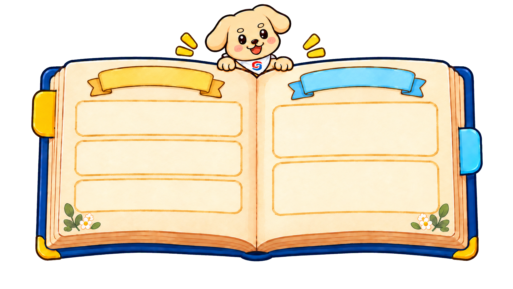
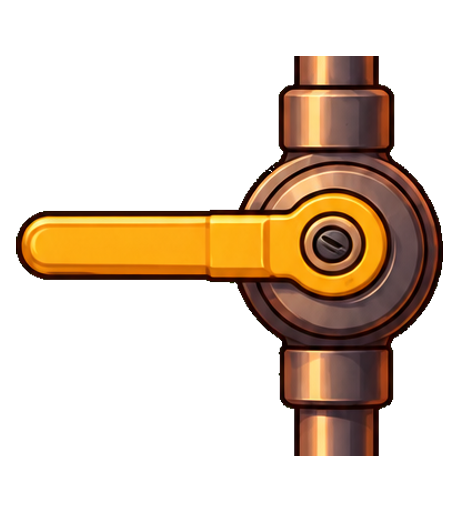
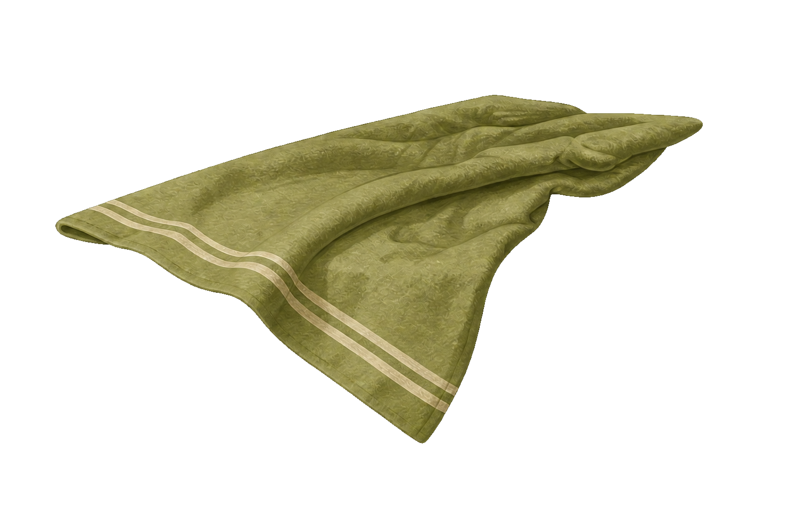
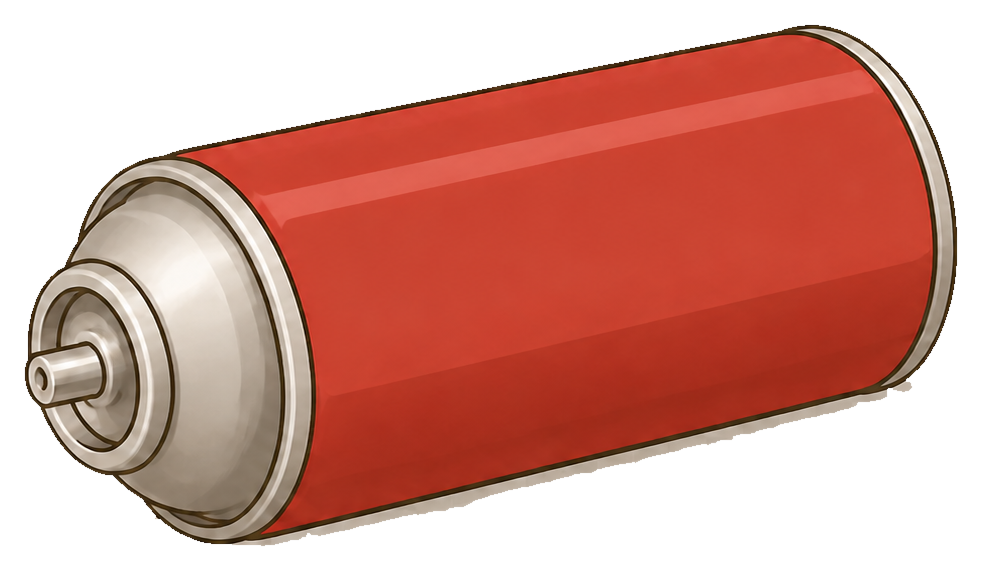
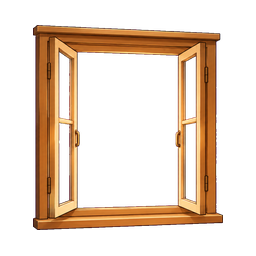
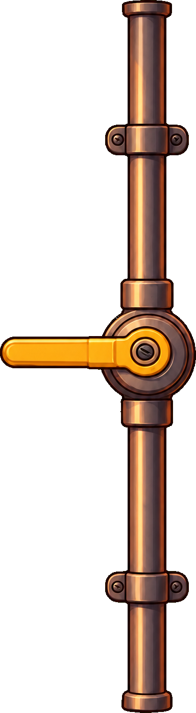
가스레인지 사용을즉시 중단해요.
가스밸브가 잠겼는지확인해요.
창문을 열어 자연환기하고가스공급자에 점검을 요청해요.
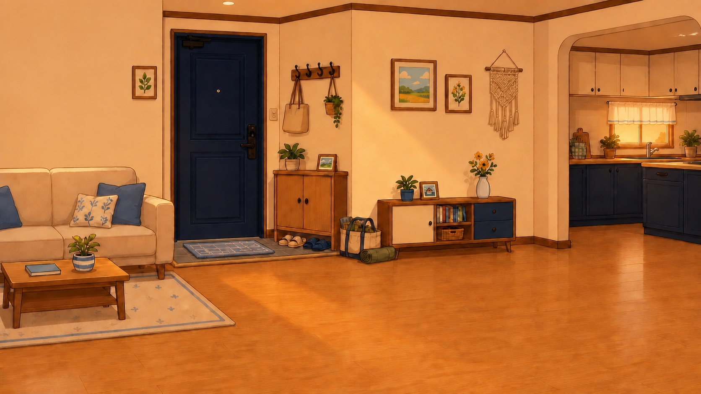
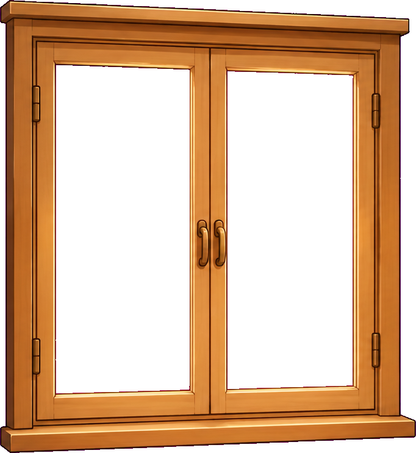
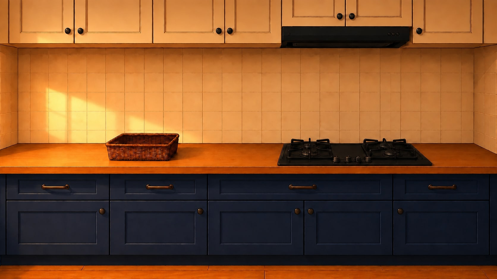
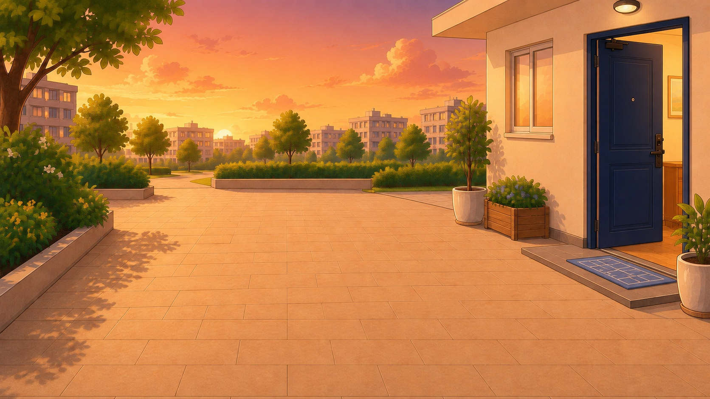
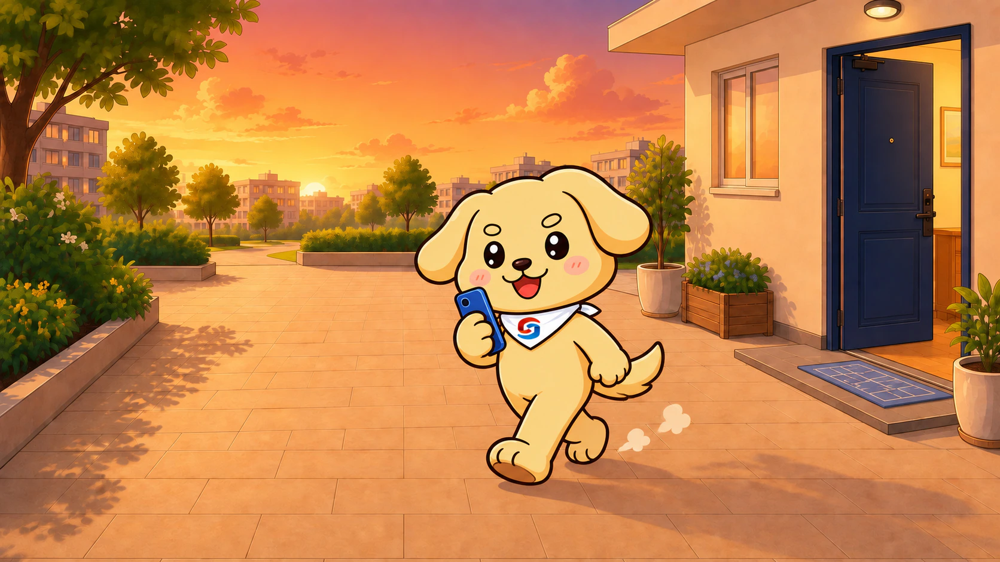
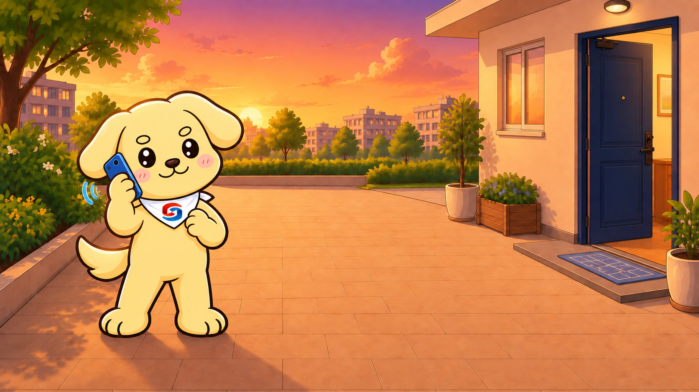
가스 전문가에게 연결하고 있어요.
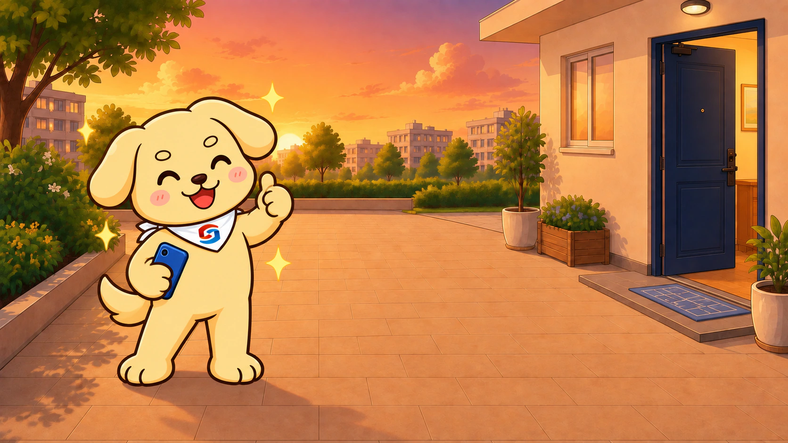
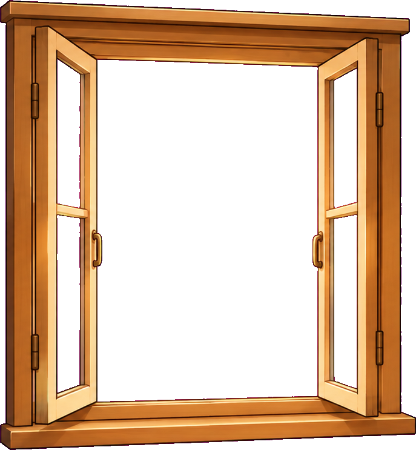
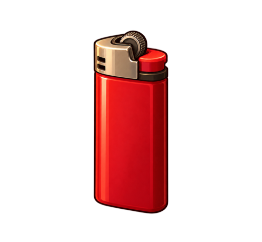
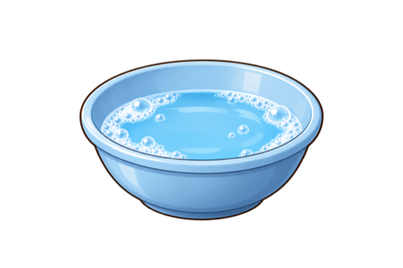
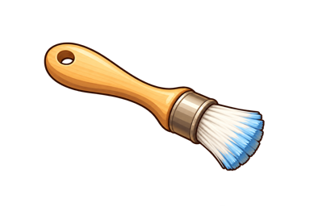
출발 전 점검과 귀가 후 안전 대응을 모두 마쳤어요!
더 크고 정확하게 안전 미션을 조작할 수 있어요.
가로 568px, 세로 300px 이상에서 안전 미션을 정확하게 조작할 수 있어요.